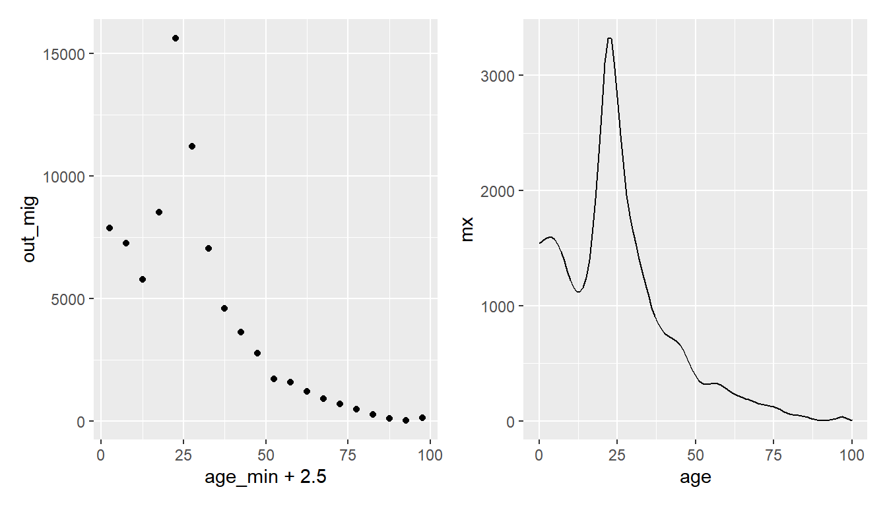

Chapter 13 Graduating
13.1 .
13.1.1 Graduating
- If you require single year migration age data, but only have data by age groups, then graduating methods can be used to estimate migration for each age that sum to the reported age group totals.
- There a multiple graduating methods available in the
graduate()function in the DemoTools package- Built for interpolating population totals, but also suitable for migration flows
- See the guide for more detail on different methods
- Requires users to provide
Valueand minimumAge. - Can also specify the maximum value of final open age group, if exists, for certain methods such as
pclm.
13.1.2 Graduating
- Using the out-migration to Italian islands area in 1970
head(i)## # A tibble: 6 x 8
## # Groups: age_grp [6]
## age_grp age_min age_max region in_mig out_mig turn net
## <fct> <int> <int> <chr> <dbl> <dbl> <dbl> <dbl>
## 1 0-4 0 4 Islands 4532 7876 12408 -3344
## 2 5-9 5 9 Islands 3592 7271 10863 -3679
## 3 10-14 10 14 Islands 2228 5779 8007 -3551
## 4 15-19 15 19 Islands 3064 8526 11590 -5462
## 5 20-24 20 24 Islands 6861 15629 22490 -8768
## 6 25-29 25 29 Islands 5891 11224 17115 -5333mx <- graduate(Value = i$out_mig, Age = i$age_min,
method = "pclm", OAG = TRUE, OAnew = 100)
mx## 0 1 2 3 4 5
## 1540.822616 1563.081967 1582.487050 1594.810184 1594.859870 1576.283303
## 6 7 8 9 10 11
## 1534.233098 1470.025351 1388.679355 1301.771896 1221.108012 1158.023181
## 12 13 14 15 16 17
## 1121.942083 1119.554144 1158.435391 1247.103598 1398.284195 1623.913611
## 18 19 20 21 22 23
## 1935.092918 2321.755623 2741.539266 3112.329630 3324.796748 3324.915552
## 24 25 26 27 28 29
## 3125.320990 2812.139216 2482.216694 2189.772149 1958.656025 1781.415216
## 30 31 32 33 34 35
## 1641.408137 1521.553492 1407.170481 1293.744997 1182.104397 1077.109503
## 36 37 38 39 40 41
## 984.353885 906.668010 845.151088 798.771354 765.545510 742.411329
## 42 43 44 45 46 47
## 725.616964 710.186702 690.289756 660.651697 617.401802 562.289211
## 48 49 50 51 52 53
## 501.033932 441.541294 391.355174 354.054434 330.929904 320.470746
## 54 55 56 57 58 59
## 319.333087 323.280116 326.437894 324.340533 314.694694 298.140366
## 60 61 62 63 64 65
## 278.157544 258.006157 240.321118 226.037262 214.561457 204.846583
## 66 67 68 69 70 71
## 195.376275 185.304981 174.609045 163.809589 153.997862 145.822900
## 72 73 74 75 76 77
## 139.398446 134.182156 128.693201 121.517548 111.497757 98.816336
## 78 79 80 81 82 83
## 85.271323 72.734621 62.959243 56.411258 52.462550 49.962470
## 84 85 86 87 88 89
## 46.549791 40.446619 31.418669 21.471299 13.559411 8.503983
## 90 91 92 93 94 95
## 5.890223 4.961916 5.352577 7.481251 12.438906 21.715730
## 96 97 98 99 100
## 32.832828 36.073090 26.875823 13.368895 4.89189213.1.3 Graduating
# check for close match between graduate values and out_mig
# 0-4
sum(mx[1:5])## [1] 7876.062# 5-9
sum(mx[6:10])## [1] 7270.993select(i, age_grp, out_mig)## # A tibble: 20 x 2
## # Groups: age_grp [20]
## age_grp out_mig
## <fct> <dbl>
## 1 0-4 7876
## 2 5-9 7271
## 3 10-14 5779
## 4 15-19 8526
## 5 20-24 15629
## 6 25-29 11224
## 7 30-34 7046
## 8 35-39 4612
## 9 40-44 3634
## 10 45-49 2783
## 11 50-54 1716
## 12 55-59 1587
## 13 60-64 1217
## 14 65-69 924
## 15 70-74 702
## 16 75-79 490
## 17 80-84 268
## 18 85-89 116
## 19 90-94 35
## 20 95+ 13713.1.4 Graduating
# different scales in y-axis
ggplot(data = i,
mapping = aes(x = age_min + 2.5, y = out_mig)) +
geom_point()
tibble(age = 0:100, mx = mx) %>%
ggplot(mapping = aes(x = age, y = mx)) +
geom_line()
13.1.5 Exercise 5 (ex5.R)
# 0. a) Load the KOSTAT2021.Rproj file.
# Run the getwd() below. It should print the directory where the
# KOSTAT2021.Rproj file is located.
getwd()
# b) Load the packages used in this exercise
library(tidyverse)
library(migest)
library(DemoTools)
##
##
##
# 1. Run the code below to read in the population age structure data for flows
# from Florida to New York based on the 2015 American Community Survey
flny <- read_csv("./data/florida_new_york_acs_2015.csv")
flny
# 2. Run the code below to plot the age schedule for migration from New York to
# Florida. Note, the uneven spread of the age groups
ggplot(data = x, mapping = aes(x = AGE_label, y = mig_in, group = 1)) +
geom_point() +
geom_line() +
theme(axis.text = element_text(angle = 45, hjust = 1))
# 3. Estimate the age schedule based on single years up to 100, based on a
# graduation of the migration data in flny
mx <- #####(Value = flny$#####, Age = #####$age_min,
method = "pclm", OAG = TRUE, OAnew = #####)
mx
# 4. Build a data frame to store the graduated data frame and a migration
# intensities (mx rescaled so that age specific intensities sum to one)
d <- tibble(
age = 1:100,
mx = mx,
mi = #####/sum(mx)
)
d
# 5. Plot the graduated age schedule
d %>%
ggplot(mapping = aes(x = #####, y = #####)) +
geom_line()
# 6. Use the age and migration intensities in d to fit a 11 parameter Rogers-
# Castro age schedule (with a retirement peak, but no post retirement peak)
f <- mig_estimate_rc(ages = d$#####, mx = d$mi,
pre_working_age = #####, working_age = TRUE,
retirement = #####, post_retirement = FALSE)
# 7. Run the code below to plot the fitted Rogers Casto age schedule
ggplot(data = f[[2]],
mapping = aes(x = age, y = data)) +
geom_ribbon(mapping = aes(ymin = lower, ymax = upper), fill = "lightblue") +
geom_line(mapping = aes(y = median), colour = "blue") +
geom_point()
# 8. Calculate the indices based on the median of the parameter distributions
# for the Rogers Castro age schedule
f[[1]] %>%
select(variable, median) %>%
#####() %>%
#####()
Bell, Martin, Marcus Blake, Paul Boyle, O. Duke-Williams, Philip H. Rees, John Stillwell, and Graeme John Hugo. 2002. “Cross-national comparison of internal migration: issues and measures.” Journal of the Royal Statistical Society: Series A (Statistics in Society) 165 (3): 435–64. https://doi.org/10.1111/1467-985X.00247.
Bell, Martin, and Salut Muhidin. 2009. “Cross-National Comparisons of Internal Migration.” Human Development Reports. United Nations Development Programme.
Bernard, Aude, Martin Bell, and Elin Charles-Edwards. 2014. “Improved measures for the cross-national comparison of age profiles of internal migration.” Population Studies 68 (2): 179–95. https://doi.org/10.1080/00324728.2014.890243.
Rogers, Andrei. 1975. Introduction to Multiregional Mathematical Demography. New York, New York, USA: Wiley.
Rogers, Andrei, and Luis J. Castro. 1981. “Model Migration Schedules.” RR-81-30. Vol. 81. Laxenburg, Austria: International Institute for Applied Systems Analysis. http://webarchive.iiasa.ac.at/Admin/PUB/Documents/RR-81-030.pdf.
Rogers, Andrei, and Jani S Little. 1994. “An International Journal of Parameterizing age patterns of demographic rates with the multiexponential model schedule.” Mathematical Population Studies 4 (3): 175–95. https://doi.org/10.1080/08898489409525372.
Rogers, Andrei, and James Raymer. 1999. “Estimating the regional migration patterns of the foreign-born population in the United States: 1950-1990.” Mathematical Population Studies 7 (3): 181–216, 307. https://doi.org/10.1080/08898489909525457.
Rogers, Andrei, James Raymer, and Jani Little. 2010. The Indirect Estimation of Migration. Vol. 26. The Springer Series on Demographic Methods and Population Analysis. Dordrecht: Springer Netherlands. https://doi.org/10.1007/978-90-481-8915-1.
Rogers, Andrei, and John Watkins. 1987. “General Versus Elderly Interstate Migration and Population Redistribution in the United States.” Research on Aging 9 (4): 483–529. https://doi.org/10.1177/0164027587094002.
United Nations Department of Economic and Social Affairs Population Division. 1992. Preparing Migration Data for Subnational Population Projections. http://www.un.org/esa/population/techcoop/IntMig/migdata{\_}popproj/migdata{\_}popproj.html.
Wilson, Tom. 2010. “Model migration schedules incorporating student migration peaks.” Demographic Research 23 (8): 191–222. https://doi.org/10.4054/DemRes.2010.23.8.